<title>Yên Lam tại CSMO Summit 2026</title>
<meta name="claude:viewport-fit-sides" content="cover">
<meta name="description" content="Báo cáo Yên Lam AI Agent tại VSMCamp & CSMOSummit 2026, 19–20/11, Ascott Tây Hồ.">
<link rel="stylesheet" href="https://fonts.googleapis.com/css2?family=Be+Vietnam+Pro:wght@400;500;600;700;800&family=JetBrains+Mono:wght@500&display=swap">
<style>
/* Layout: photo hero over the hall, KPI strip, then alternating photo + figure bands. Single deliberate navy look (event key visual). */
:root{
  --bg:#0A1220; --panel:#101B2E; --panel2:#15233A; --fg:#EEF3FA; --muted:#97A7BE; --line:#22324B;
  --a1:#2E9BFF; --a2:#19D3B0; --warm:#F2C14E;
  --sans:"Be Vietnam Pro",system-ui,-apple-system,"Segoe UI",sans-serif;
  --mono:"JetBrains Mono",ui-monospace,Consolas,monospace;
  color-scheme:dark;
}
*{box-sizing:border-box}
html{scroll-behavior:smooth}
body{background:var(--bg);color:var(--fg);font-family:var(--sans);font-size:16px;line-height:1.6}
.wrap{max-width:1160px;margin:0 auto;padding-left:max(16px,env(safe-area-inset-left,0px));padding-right:max(16px,env(safe-area-inset-right,0px))}
img{display:block;max-width:100%;height:auto}
.hero{position:relative;overflow:hidden;min-height:min(78vh,720px);display:flex;align-items:flex-end}
.hero img.bg{position:absolute;inset:0;width:100%;height:100%;object-fit:cover}
.hero::after{content:"";position:absolute;inset:0;background:linear-gradient(180deg,rgba(10,18,32,.35) 0%,rgba(10,18,32,.55) 45%,var(--bg) 100%)}
.hero .wrap{position:relative;z-index:1;padding-block:7rem 3rem;width:100%}
.eyebrow{font-family:var(--mono);font-size:.78rem;letter-spacing:.14em;text-transform:uppercase;color:var(--a2)}
h1{font-size:clamp(2.2rem,6vw,4.2rem);line-height:1.05;margin:.7rem 0 1rem;font-weight:800;text-wrap:balance;max-width:16ch}
.hero p{color:#C9D5E6;max-width:58ch;margin:0;font-size:1.05rem}
.total{display:flex;flex-wrap:wrap;align-items:baseline;gap:.3rem 1rem;margin-top:2rem}
.total b{font-size:clamp(4rem,14vw,9rem);line-height:.9;font-weight:800;background:linear-gradient(90deg,var(--a1),var(--a2));-webkit-background-clip:text;background-clip:text;color:transparent;font-variant-numeric:tabular-nums}
.total span{font-size:1.1rem;max-width:20ch}
section{padding-block:4rem}
h2{font-size:clamp(1.5rem,3vw,2.1rem);line-height:1.2;margin:0 0 .4rem;text-wrap:balance}
.lead{color:var(--muted);margin:0 0 2rem;max-width:62ch}
.kpis{display:grid;grid-template-columns:repeat(4,1fr);gap:1px;background:var(--line);border:1px solid var(--line);border-radius:14px;overflow:hidden}
.kpi{background:var(--panel);padding:1.4rem 1.3rem;min-width:0}
.kpi b{display:block;font-size:clamp(1.9rem,4vw,2.6rem);font-weight:800;line-height:1.1;font-variant-numeric:tabular-nums}
.kpi span{color:var(--muted);font-size:.9rem}
.kpi.hl b{color:var(--a2)}
@media (max-width:760px){.kpis{grid-template-columns:repeat(2,1fr)}}
.gallery{display:grid;grid-template-columns:repeat(4,1fr);gap:10px}
.gallery figure{margin:0;border-radius:12px;overflow:hidden;background:var(--panel);position:relative}
.gallery img{width:100%;height:100%;object-fit:cover;aspect-ratio:3/4}
.gallery .wide{grid-column:span 2}
.gallery .wide img{aspect-ratio:3/2}
.gallery figcaption{position:absolute;left:0;right:0;bottom:0;padding:1.6rem .8rem .6rem;font-size:.82rem;background:linear-gradient(0deg,rgba(6,12,22,.85),transparent)}
@media (max-width:760px){.gallery{grid-template-columns:repeat(2,1fr)}.gallery .wide{grid-column:span 2}}
.two{display:grid;grid-template-columns:1fr 1fr;gap:20px}
@media (max-width:860px){.two{grid-template-columns:1fr}}
.card{background:var(--panel);border:1px solid var(--line);border-radius:14px;padding:1.5rem;min-width:0}
.card h3{margin:0 0 .2rem;font-size:1.05rem}
.card .sub{color:var(--muted);font-size:.88rem;margin:0 0 1.3rem}
.bars{display:grid;gap:1rem}
.bar{display:grid;grid-template-columns:8.5rem 1fr 3.5rem;align-items:center;gap:.8rem;font-size:.92rem}
.bar .t{height:16px;border-radius:8px;background:var(--panel2);overflow:hidden}
.bar .t i{display:block;height:100%;border-radius:8px;background:linear-gradient(90deg,var(--a1),var(--a2))}
.bar .t i.w{background:var(--warm)}
.bar em{font-style:normal;text-align:right;font-variant-numeric:tabular-nums;font-weight:700}
@media (max-width:480px){.bar{grid-template-columns:6.5rem 1fr 3rem}}
.split{display:flex;height:44px;border-radius:10px;overflow:hidden;margin:.4rem 0 1rem;font-weight:700;font-size:.9rem}
.split div{display:flex;align-items:center;padding:0 .8rem;white-space:nowrap;overflow:hidden}
.legend{display:flex;flex-wrap:wrap;gap:.4rem 1.2rem;color:var(--muted);font-size:.86rem}
.legend i{display:inline-block;width:10px;height:10px;border-radius:3px;margin-right:.4rem;vertical-align:middle}
.journey{display:grid;grid-template-columns:repeat(4,1fr);gap:16px;counter-reset:s}
.step{min-width:0}
.step .ph{background:var(--panel);border:1px solid var(--line);border-radius:16px;padding:10px;display:flex;justify-content:center;align-items:center;aspect-ratio:9/14}
.step .ph img{max-height:100%;width:auto;border-radius:8px}
.step h3{font-size:1rem;margin:.9rem 0 .2rem}
.step h3::before{counter-increment:s;content:counter(s);display:inline-grid;place-items:center;width:1.5rem;height:1.5rem;border-radius:50%;background:var(--a1);color:#fff;font-size:.8rem;margin-right:.5rem}
.step p{margin:0;color:var(--muted);font-size:.9rem}
@media (max-width:860px){.journey{grid-template-columns:repeat(2,1fr)}}
.mag{display:grid;grid-template-columns:1.4fr 1fr;gap:28px;align-items:center}
.mag img{border-radius:14px;border:1px solid var(--line)}
@media (max-width:860px){.mag{grid-template-columns:1fr}}
.mag ul{padding-left:1.1rem;color:var(--muted);margin:1rem 0 0}
.mag li{margin:.3rem 0}
details{background:var(--panel);border:1px solid var(--line);border-radius:14px;padding:1rem 1.3rem}
summary{cursor:pointer;font-weight:600}
summary:focus-visible,a:focus-visible{outline:2px solid var(--a2);outline-offset:3px}
.sess{columns:2 340px;column-gap:2rem;padding:0;margin:1rem 0 0;list-style:none}
.sess li{break-inside:avoid;padding:.55rem 0;border-top:1px solid var(--line);font-size:.92rem}
.sess time{font-family:var(--mono);font-size:.76rem;color:var(--a2);margin-right:.5rem}
.dl{display:grid;grid-template-columns:repeat(auto-fit,minmax(260px,1fr));gap:14px}
.dl a{display:flex;gap:1rem;align-items:center;padding:1.2rem 1.3rem;border-radius:14px;background:var(--panel);border:1px solid var(--line);color:var(--fg);text-decoration:none;transition:border-color .2s,transform .2s}
.dl a:hover{border-color:var(--a1);transform:translateY(-2px)}
.dl .ic{flex:none;width:44px;height:44px;border-radius:10px;display:grid;place-items:center;background:var(--panel2);font-family:var(--mono);font-size:.72rem;color:var(--a2)}
.dl b{display:block}
.dl small{color:var(--muted)}
svg text{fill:var(--muted);font:11px var(--sans)}
.bar.q{grid-template-columns:minmax(0,1fr) 7rem 2.5rem}
.bar.q span{font-size:.88rem}
@media (max-width:480px){.bar.q{grid-template-columns:minmax(0,1fr) 4rem 2rem}}
footer{color:var(--muted);font-size:.84rem;padding-block:2.5rem;border-top:1px solid var(--line)}
@media (prefers-reduced-motion:reduce){*{transition:none!important;scroll-behavior:auto!important}}
</style>

<header class="hero">
  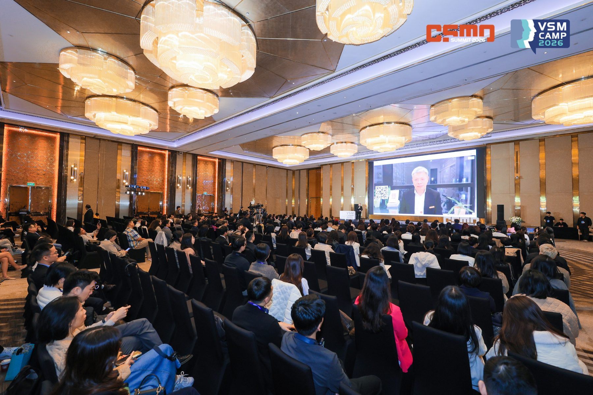
  <div class="wrap">
    <div class="eyebrow">VSMCamp &amp; CSMOSummit 2026 · Ascott Tây Hồ · 19–20/11</div>
    <h1>Yên Lam, AI Agent dẫn đường của CSMO Summit</h1>
    <p>Khách trò chuyện với Lam bằng giọng nói tại kiosk, hỏi Lam qua điện thoại, chụp bìa tạp chí AGENTIC:ME mang tên mình và lưu những phiên muốn nghe lại.</p>
    <div class="total"><b>1.311</b><span>lượt khách tương tác với Yên Lam trong 2 ngày</span></div>
  </div>
</header>

<main>
<section><div class="wrap">
  <div class="kpis">
    <div class="kpi hl"><b>840</b><span>câu hỏi khách gửi Yên Lam</span></div>
    <div class="kpi hl"><b>377</b><span>bìa AGENTIC:ME được chụp</span></div>
    <div class="kpi"><b>674</b><span>lượt trò chuyện bằng giọng nói</span></div>
    <div class="kpi"><b>100</b><span>thiết bị kết nối với Lam</span></div>
    <div class="kpi"><b>93</b><span>khách để lại email nhận tạp chí</span></div>
    <div class="kpi"><b>35</b><span>phiên nói Lam tự học trong ngày</span></div>
    <div class="kpi"><b>52</b><span>phiên khách lưu vào lộ trình riêng</span></div>
    <div class="kpi"><b>42</b><span>phiếu bình chọn diễn giả</span></div>
  </div>
</div></section>

<section style="padding-top:0"><div class="wrap">
  <h2>Tại sự kiện</h2>
  <p class="lead">Kiosk Yên Lam đặt ở sảnh tầng hội nghị. Khách xếp hàng để nói chuyện với Lam và nhận bìa tạp chí của riêng mình.</p>
  <div class="gallery">
    <figure class="wide">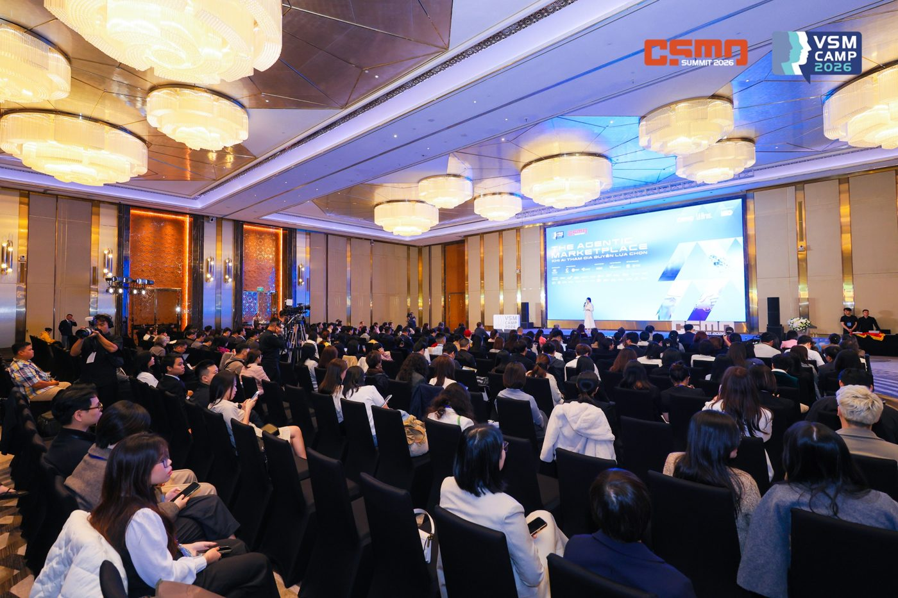<figcaption>Khán phòng phiên chính, ngày 19/11</figcaption></figure>
    <figure>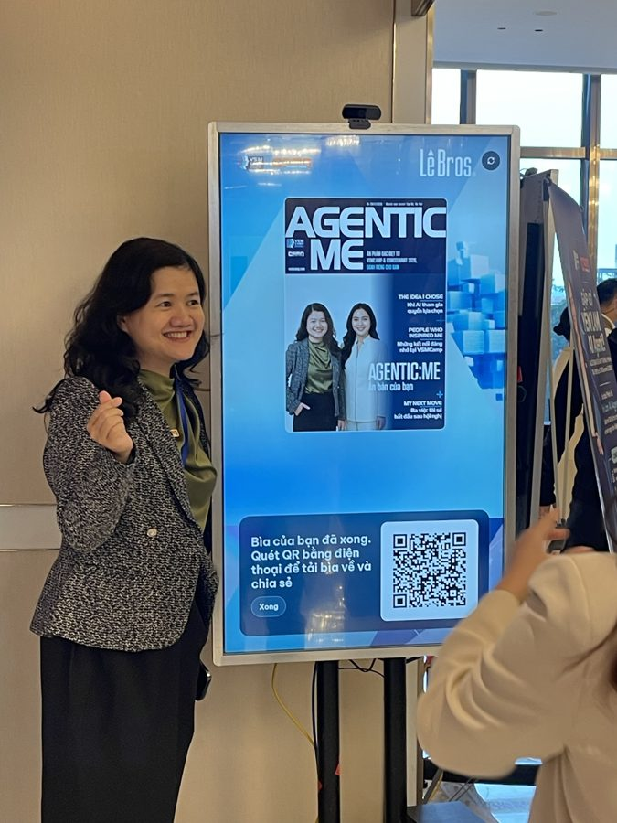<figcaption>Khách nhận bìa tại kiosk</figcaption></figure>
    <figure>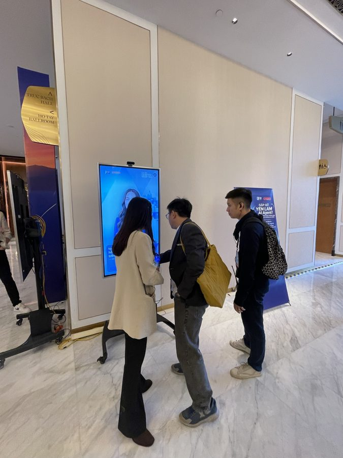<figcaption>Xếp hàng trò chuyện với Lam</figcaption></figure>
    <figure>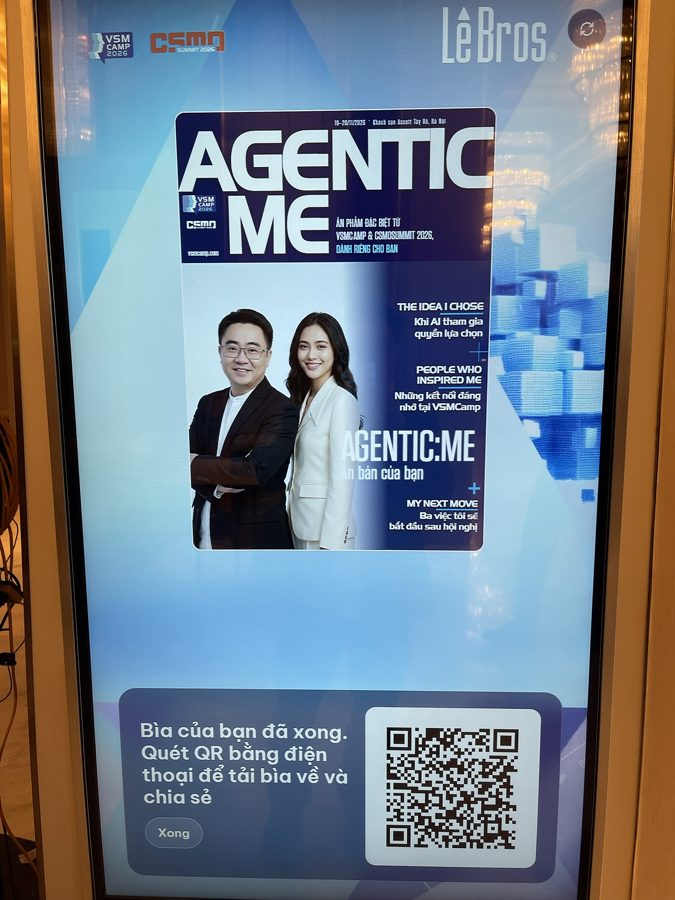<figcaption>Bìa AGENTIC:ME kèm QR tải về</figcaption></figure>
    <figure>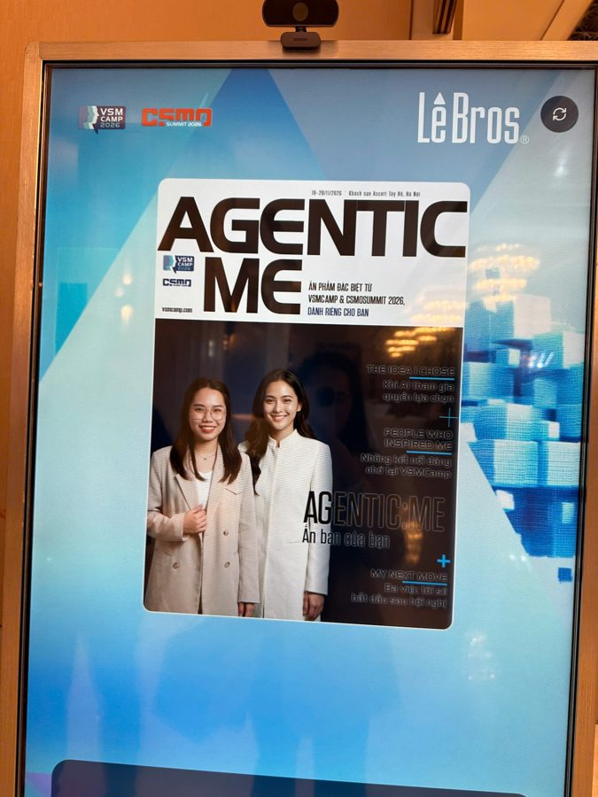<figcaption>Khách đứng cạnh Yên Lam trên bìa</figcaption></figure>
    <figure>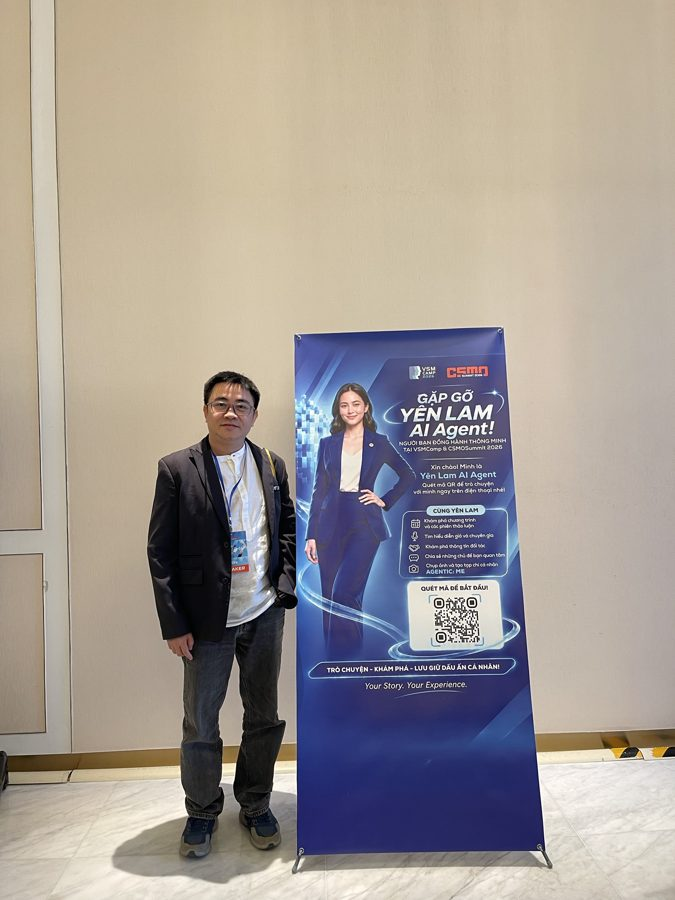<figcaption>Standee "Gặp gỡ Yên Lam AI Agent"</figcaption></figure>
    <figure>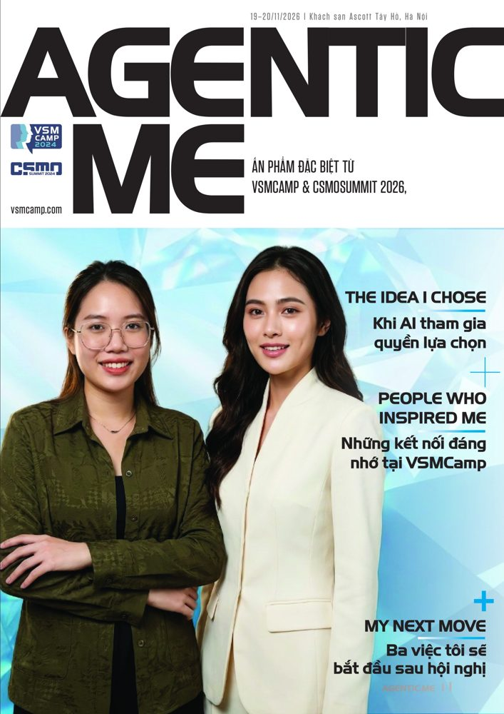<figcaption>Bìa mẫu theo thiết kế LeBros</figcaption></figure>
  </div>
</div></section>

<section style="padding-top:0"><div class="wrap">
  <h2>Khách đã dùng Lam như thế nào</h2>
  <p class="lead">8 trên 10 câu hỏi đến bằng giọng nói. Kiosk tại sự kiện chiếm gần hai phần ba lượt hỏi, phần còn lại đến từ điện thoại của khách.</p>
  <div class="two">
    <div class="card">
      <h3>840 câu hỏi theo cách hỏi</h3>
      <p class="sub">Giọng nói trực tiếp, gõ chữ, ghi âm</p>
      <div class="split">
        <div style="width:80.2%;background:linear-gradient(90deg,var(--a1),var(--a2))">Giọng nói 80%</div>
        <div style="width:18.7%;background:var(--warm);color:#1b1404">19%</div>
        <div style="width:1.1%;background:var(--muted)"></div>
      </div>
      <div class="legend"><span><i style="background:var(--a1)"></i>Giọng nói trực tiếp 674</span><span><i style="background:var(--warm)"></i>Gõ chữ 157</span><span><i style="background:var(--muted)"></i>Ghi âm 9</span></div>
    </div>
    <div class="card">
      <h3>Kiosk và điện thoại</h3>
      <p class="sub">Số câu hỏi gửi Lam theo nơi hỏi</p>
      <div class="bars">
        <div class="bar"><span>Kiosk tại sự kiện</span><div class="t"><i style="width:100%"></i></div><em>531</em></div>
        <div class="bar"><span>Điện thoại khách</span><div class="t"><i class="w" style="width:58.2%"></i></div><em>309</em></div>
      </div>
    </div>
    <div class="card">
      <h3>Bìa AGENTIC:ME theo ngày</h3>
      <p class="sub">377 bìa trong 2 ngày, ngày 2 nhiều hơn ngày 1</p>
      <div class="bars">
        <div class="bar"><span>19/11</span><div class="t"><i style="width:93.3%"></i></div><em>182</em></div>
        <div class="bar"><span>20/11</span><div class="t"><i style="width:100%"></i></div><em>195</em></div>
      </div>
    </div>
    <div class="card">
      <h3>Bìa theo nơi chụp</h3>
      <p class="sub">Mỗi bìa dựng xong trong khoảng 29 giây</p>
      <div class="bars">
        <div class="bar"><span>Kiosk</span><div class="t"><i style="width:100%"></i></div><em>334</em></div>
        <div class="bar"><span>Điện thoại</span><div class="t"><i class="w" style="width:12.9%"></i></div><em>43</em></div>
      </div>
    </div>
  </div>
</div></section>

<section style="padding-top:0"><div class="wrap">
  <h2>Giờ cao điểm 10h ngày 19/11: 119 lượt hỏi trong 1 giờ</h2>
  <p class="lead">Lượt hỏi tăng mạnh đầu giờ sáng và giờ nghỉ giữa phiên, khi khách tìm phòng, giờ và diễn giả.</p>
  <div class="two">
    <div class="card"><h3>Lượt hỏi Yên Lam theo giờ</h3><p class="sub">Giờ Việt Nam, 7h–21h</p><div style="overflow-x:auto"><svg viewBox="0 0 720 240" width="100%" role="img" aria-label="Lượt hỏi Yên Lam theo giờ, 2 ngày"><line x1="34" x2="712" y1="212.0" y2="212.0" stroke="var(--line)"/><text x="28" y="216.0" text-anchor="end">0</text><line x1="34" x2="712" y1="146.0" y2="146.0" stroke="var(--line)"/><text x="28" y="150.0" text-anchor="end">40</text><line x1="34" x2="712" y1="80.0" y2="80.0" stroke="var(--line)"/><text x="28" y="84.0" text-anchor="end">80</text><line x1="34" x2="712" y1="14.0" y2="14.0" stroke="var(--line)"/><text x="28" y="18.0" text-anchor="end">120</text><rect x="40.8" y="131.2" width="14.4" height="80.8" rx="2" fill="var(--a1)"><title>19/11 7h: 49 lượt</title></rect><rect x="56.1" y="187.2" width="14.4" height="24.8" rx="2" fill="var(--a2)"><title>20/11 7h: 15 lượt</title></rect><text x="56.6" y="232" text-anchor="middle">7h</text><rect x="86.0" y="70.1" width="14.4" height="141.9" rx="2" fill="var(--a1)"><title>19/11 8h: 86 lượt</title></rect><rect x="101.3" y="184.0" width="14.4" height="28.0" rx="2" fill="var(--a2)"><title>20/11 8h: 17 lượt</title></rect><text x="101.8" y="232" text-anchor="middle">8h</text><rect x="131.2" y="197.2" width="14.4" height="14.8" rx="2" fill="var(--a1)"><title>19/11 9h: 9 lượt</title></rect><rect x="146.5" y="175.7" width="14.4" height="36.3" rx="2" fill="var(--a2)"><title>20/11 9h: 22 lượt</title></rect><text x="147.0" y="232" text-anchor="middle">9h</text><rect x="176.4" y="15.6" width="14.4" height="196.3" rx="2" fill="var(--a1)"><title>19/11 10h: 119 lượt</title></rect><rect x="191.7" y="170.8" width="14.4" height="41.2" rx="2" fill="var(--a2)"><title>20/11 10h: 25 lượt</title></rect><text x="192.2" y="232" text-anchor="middle">10h</text><rect x="221.6" y="155.9" width="14.4" height="56.1" rx="2" fill="var(--a1)"><title>19/11 11h: 34 lượt</title></rect><rect x="236.9" y="187.2" width="14.4" height="24.8" rx="2" fill="var(--a2)"><title>20/11 11h: 15 lượt</title></rect><text x="237.4" y="232" text-anchor="middle">11h</text><rect x="266.8" y="146.0" width="14.4" height="66.0" rx="2" fill="var(--a1)"><title>19/11 12h: 40 lượt</title></rect><rect x="282.1" y="119.6" width="14.4" height="92.4" rx="2" fill="var(--a2)"><title>20/11 12h: 56 lượt</title></rect><text x="282.6" y="232" text-anchor="middle">12h</text><rect x="312.0" y="177.3" width="14.4" height="34.7" rx="2" fill="var(--a1)"><title>19/11 13h: 21 lượt</title></rect><rect x="327.3" y="210.3" width="14.4" height="1.7" rx="2" fill="var(--a2)"><title>20/11 13h: 1 lượt</title></rect><text x="327.8" y="232" text-anchor="middle">13h</text><rect x="357.2" y="149.3" width="14.4" height="62.7" rx="2" fill="var(--a1)"><title>19/11 14h: 38 lượt</title></rect><rect x="372.5" y="205.4" width="14.4" height="6.6" rx="2" fill="var(--a2)"><title>20/11 14h: 4 lượt</title></rect><text x="373.0" y="232" text-anchor="middle">14h</text><rect x="402.4" y="180.7" width="14.4" height="31.3" rx="2" fill="var(--a1)"><title>19/11 15h: 19 lượt</title></rect><rect x="417.7" y="203.8" width="14.4" height="8.2" rx="2" fill="var(--a2)"><title>20/11 15h: 5 lượt</title></rect><text x="418.2" y="232" text-anchor="middle">15h</text><rect x="447.6" y="195.5" width="14.4" height="16.5" rx="2" fill="var(--a1)"><title>19/11 16h: 10 lượt</title></rect><rect x="462.9" y="169.1" width="14.4" height="42.9" rx="2" fill="var(--a2)"><title>20/11 16h: 26 lượt</title></rect><text x="463.4" y="232" text-anchor="middle">16h</text><rect x="492.8" y="193.8" width="14.4" height="18.2" rx="2" fill="var(--a1)"><title>19/11 17h: 11 lượt</title></rect><rect x="508.1" y="210.3" width="14.4" height="1.7" rx="2" fill="var(--a2)"><title>20/11 17h: 1 lượt</title></rect><text x="508.6" y="232" text-anchor="middle">17h</text><rect x="538.0" y="207.0" width="14.4" height="5.0" rx="2" fill="var(--a1)"><title>19/11 18h: 3 lượt</title></rect><rect x="553.3" y="179.0" width="14.4" height="33.0" rx="2" fill="var(--a2)"><title>20/11 18h: 20 lượt</title></rect><text x="553.8" y="232" text-anchor="middle">18h</text><rect x="583.2" y="202.1" width="14.4" height="9.9" rx="2" fill="var(--a1)"><title>19/11 19h: 6 lượt</title></rect><text x="599.0" y="232" text-anchor="middle">19h</text><rect x="628.4" y="202.1" width="14.4" height="9.9" rx="2" fill="var(--a1)"><title>19/11 20h: 6 lượt</title></rect><text x="644.2" y="232" text-anchor="middle">20h</text><rect x="673.6" y="197.2" width="14.4" height="14.8" rx="2" fill="var(--a1)"><title>19/11 21h: 9 lượt</title></rect><text x="689.4" y="232" text-anchor="middle">21h</text><text x="192.2" y="10.6" text-anchor="middle" style="fill:var(--fg);font-weight:700">119</text></svg></div>
      <div class="legend"><span><i style="background:var(--a1)"></i>19/11</span><span><i style="background:var(--a2)"></i>20/11</span></div></div>
    <div class="card"><h3>Khách hỏi Lam nhiều nhất</h3><p class="sub">Số lượt hỏi cùng ý</p><div class="bars"><div class="bar q"><span>Lễ khai mạc lúc mấy giờ, ở hội trường nào?</span><div class="t"><i style="width:100%"></i></div><em>46</em></div><div class="bar q"><span>Chiều nay có gì về GEO?</span><div class="t"><i style="width:37%"></i></div><em>17</em></div><div class="bar q"><span>Track Olive diễn ra ở phòng nào?</span><div class="t"><i style="width:22%"></i></div><em>10</em></div><div class="bar q"><span>Diễn giả Lê Quốc Vinh nói lúc nào?</span><div class="t"><i style="width:17%"></i></div><em>8</em></div><div class="bar q"><span>Sự kiện có bao nhiêu diễn giả?</span><div class="t"><i style="width:17%"></i></div><em>8</em></div><div class="bar q"><span>NetNam là đơn vị gì?</span><div class="t"><i style="width:15%"></i></div><em>7</em></div><div class="bar q"><span>Mấy giờ ăn trưa?</span><div class="t"><i style="width:13%"></i></div><em>6</em></div><div class="bar q"><span>Mật khẩu wifi của sự kiện là gì?</span><div class="t"><i style="width:13%"></i></div><em>6</em></div></div></div>
  </div>
</div></section>
<section style="padding-top:0"><div class="wrap">
  <h2>Hành trình của một vị khách</h2>
  <p class="lead">Từ lúc bước tới kiosk đến lúc cầm bìa và tạp chí trên điện thoại.</p>
  <div class="journey">
    <div class="step"><div class="ph">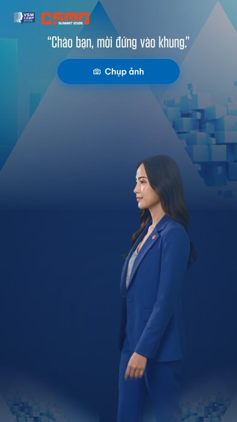</div><h3>Gặp Lam</h3><p>Lam chào và mời khách đứng vào khung để chụp.</p></div>
    <div class="step"><div class="ph">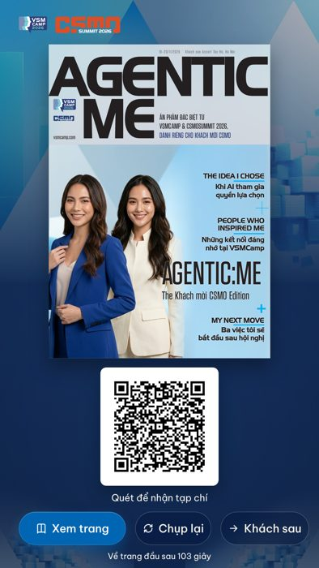</div><h3>Nhận bìa</h3><p>Khoảng 29 giây sau, bìa mang tên khách hiện kèm mã QR.</p></div>
    <div class="step"><div class="ph">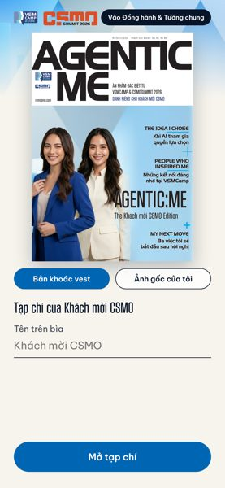</div><h3>Quét QR</h3><p>Khách lưu bìa về điện thoại và mở tạp chí riêng.</p></div>
    <div class="step"><div class="ph"></div><h3>Mang về</h3><p>Bìa và tạp chí 8 trang để chia sẻ sau sự kiện.</p></div>
  </div>
</div></section>

<section style="padding-top:0"><div class="wrap">
  <div class="mag">
    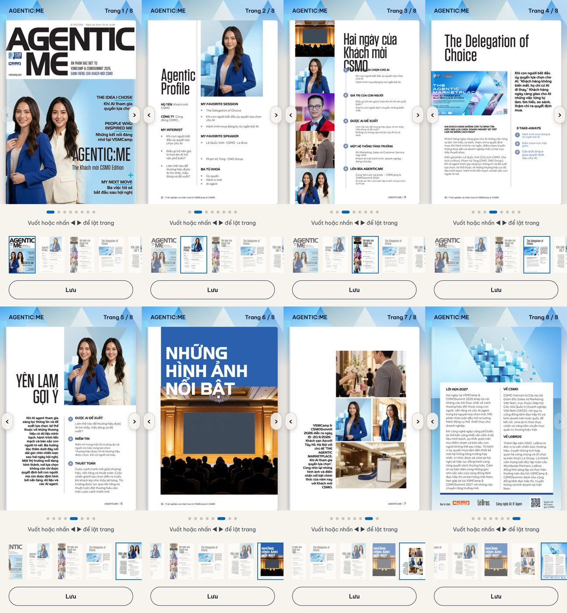
    <div>
      <h2>Tạp chí AGENTIC:ME 8 trang</h2>
      <p class="lead" style="margin-bottom:0">Mỗi khách nhận một tạp chí riêng, dựng từ chính hành trình của mình tại sự kiện.</p>
      <ul>
        <li>Bìa mang tên khách, đứng cạnh Yên Lam</li>
        <li>Tóm tắt những phiên khách đã lưu</li>
        <li>Diễn giả khách bình chọn</li>
        <li>Ảnh toàn cảnh hai ngày sự kiện</li>
      </ul>
    </div>
  </div>
</div></section>

<section style="padding-top:0"><div class="wrap">
  <h2>Lam học từng phiên ngay trong ngày</h2>
  <p class="lead">Sau mỗi phiên, Lam tự đọc tóm tắt của BTC để khách hỏi lại nội dung vừa nghe.</p>
  <details><summary>Xem 35 phiên Lam đã học</summary><ul class="sess"><li><time>19/11 09:58</time>Customer Voice: Chuyện gì đang xảy ra, khi người tiêu dùng cũng sử dụng AI Agent?</li><li><time>19/11 10:20</time>Keynote: Con người, nền tảng và AI: Bài toán chinh phục mới của thương hiệu</li><li><time>19/11 12:08</time>Keynote: Design for a Trusted brand, Trust in the age of AI Disruption</li><li><time>19/11 12:48</time>Keynote: Dùng AI để rèn năng lực Đồng cảm và Bán hàng – Using AI to Coach Salespeople &amp; Frontline Teams</li><li><time>19/11 12:53</time>Keynote: Agentic Enterprise: Hợp nhất Marketing, Sales và Service trong một dòng chảy tăng trưởng duy nhất.</li><li><time>19/11 14:46</time>TRACK IRIS: Khi AI “đọc vị” khách hàng: Những hiệu ứng tâm lý cũ trong cuộc chơi mới</li><li><time>19/11 15:10</time>TRACK IRIS: Chủ động kiến tạo thị trường trong xã hội Người – Máy – Người</li><li><time>19/11 21:57</time>TRACK IRIS: From Silos to Synergy: Tái kiến trúc hệ thống tăng trưởng trong kỷ nguyên AI Agent</li><li><time>19/11 21:59</time>TRACK IRIS: Real-time signal và real-time decision</li><li><time>19/11 22:01</time>TRACK IRIS: Từ các chiến dịch rời rạc đến tăng trưởng tích hợp: AI đang tái định hình cách thương hiệu phát triển trong thực tiễn</li><li><time>19/11 22:02</time>TRACK IRIS: Tái định nghĩa công thức tăng trưởng Khách hàng trong kỷ nguyên AI</li><li><time>19/11 22:04</time>TRACK IRIS: AI ngày càng làm được nhiều việc hơn. Vai trò của con người trong hệ thống và mối quan hệ giữa người và máy sẽ như thế nào?</li><li><time>19/11 22:54</time>TRACK OLIVE: TĂNG TRƯỞNG THƯƠNG HIỆU KHI AI THAM GIA QUYỀN LỰA CHỌN: Bảo vệ bản sắc và xây dựng hệ sinh thái trải nghiệm kết nối</li><li><time>19/11 22:55</time>TRACK OLIVE: Xu hướng khách hàng đang trao quyền lựa chọn cho AI và nền tảng – Báo cáo từ NielsenIQ</li><li><time>19/11 22:56</time>TRACK OLIVE: Who does the agent work for? AI phục vụ ai, ai chịu trách nhiệm?</li><li><time>19/11 22:59</time>TRACK OLIVE: Từ Brand Claim đến Verifiable Truth: Làm sao để được cả người dùng tin và AI Agent đề xuất?</li><li><time>19/11 23:01</time>TRACK OLIVE: FROM PROMPT TO PREFERENCE: AI hay thương hiệu — Ai thực sự chi phối sự lựa chọn?</li><li><time>19/11 23:05</time>TRACK OLIVE: Xuất hiện trong kết quả của công cụ: Tiếp cận khách hàng khi các tác nhân AI đưa ra lựa chọn thay cho họ</li><li><time>19/11 23:06</time>TRACK OLIVE: Delegated Commerce Governance: Khi AI được trao quyền mua hàng, ai thiết lập luật chơi?</li><li><time>19/11 23:40</time>TRACK LAVENDER: AI-Power Marketing: Future of Growth</li><li><time>19/11 23:40</time>TRACK LAVENDER: THE MACHINE-READABLE BRAND: Thương hiệu của bạn, AI có hiểu không?</li><li><time>19/11 23:42</time>TRACK LAVENDER: Một câu chuyện hay còn đủ không? – Vai trò của cảm xúc và trải nghiệm trong branding</li><li><time>19/11 23:43</time>TRACK LAVENDER: Winning the AI Recommendation: Làm thế nào để thương hiệu xuất hiện trong câu trả lời của AI?</li><li><time>19/11 23:44</time>TRACK LAVENDER: Ứng dụng GAI và triển khai các giải pháp GEO thực tiễn nhằm tối ưu hóa hiển thị trên các công cụ tìm kiếm bằng AI</li><li><time>19/11 23:47</time>TRACK LAVENDER: Bài toán của thương hiệu: Làm thế nào để con người và AI đều lựa chọn?</li><li><time>19/11 23:49</time>TRACK LAVENDER: RA MẮT SẢN PHẨM TRONG THỜI ĐẠI AI: LÀM SAO ĐỂ KHÁCH HÀNG CHỌN MUA? Bài học từ Trung Quốc về tạo nhu cầu, đầu tư truyền thông và quyết định mở rộng chiến dịch.</li><li><time>20/11 09:47</time>NGÀY 2: Building the AI-Native Enterprise: Redesigning Strategy, Operations and Human Value</li><li><time>20/11 10:14</time>NGÀY 2: Đi đến đích cùng AI: Hành trình từ quản trị rủi ro đến tạo sinh lợi nhuận.</li><li><time>20/11 10:40</time>NGÀY 2: Agentic Commerce: Từ bùng nổ xu hướng đến hiện thực và bài toán cho doanh nghiệp Việt Nam</li><li><time>20/11 11:47</time>NGÀY 2: KIẾN TẠO TRUST CAPITAL TRONG THE AGENTIC MARKETPLACE: Vốn niềm tin – năng lực được tin chọn</li><li><time>20/11 14:01</time>NGÀY 2: Bền vững trong thời đại Agentic AI</li><li><time>20/11 14:44</time>NGÀY 2: REWIRED: Hệ thống tăng trưởng dưới góc nhìn tái cấu trúc số của McKinsey</li><li><time>20/11 15:25</time>NGÀY 2: Trải nghiệm khách hàng đáng được giới thiệu trong kỷ nguyên AI – Building An Experience Worth Recommending</li><li><time>20/11 15:58</time>NGÀY 2: AI sẽ định hình cuộc sống của chúng ta như thế nào?</li><li><time>20/11 16:54</time>NGÀY 2: Từ chiến dịch rời rạc đến cỗ máy tăng trưởng liên tục: Doanh nghiệp cần thay đổi gì khi AI tham gia quyền lựa chọn?</li></ul></details>
</div></section>

<section style="padding-top:0"><div class="wrap">
  <h2>Tải về</h2>
  <p class="lead">Số liệu tổng hợp và bộ ảnh để dùng trong báo cáo.</p>
  <div class="dl">
    <a href="tai-ve/so-lieu-yen-lam-csmo-2026.xlsx" download><span class="ic">XLSX</span><span><b>Số liệu tổng hợp</b><small>Tổng quan, lượt bìa, chat theo giờ, bình chọn, 35 phiên · 42 KB</small></span></a>
    <a href="tai-ve/anh-yen-lam-csmo-2026.zip" download><span class="ic">ZIP</span><span><b>Bộ ảnh báo cáo</b><small>12 ảnh sự kiện, kiosk, bìa và tạp chí · 1,6 MB</small></span></a>
  </div>
</div></section>
</main>
<footer><div class="wrap">Nguồn: database hệ thống Yên Lam (kiosk và điện thoại), bản chụp 21:01 ngày 20/11/2026, tính trong 2 ngày 19–20/11. Thực hiện bởi IF Agent cùng LeBros cho VSMCamp &amp; CSMOSummit 2026.</div></footer>
